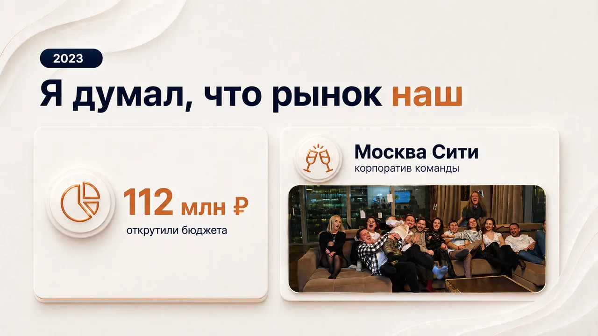
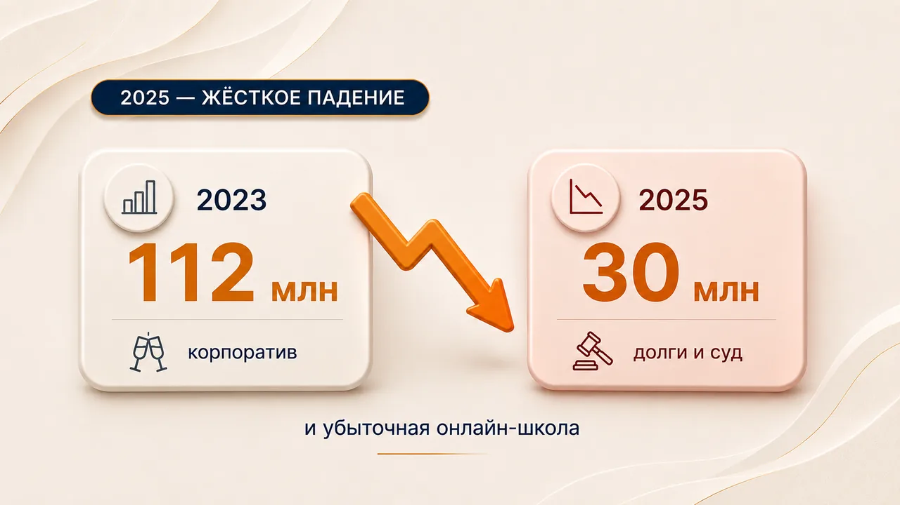
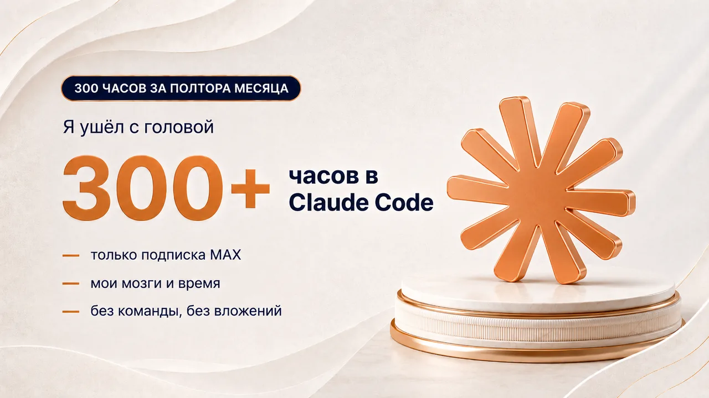
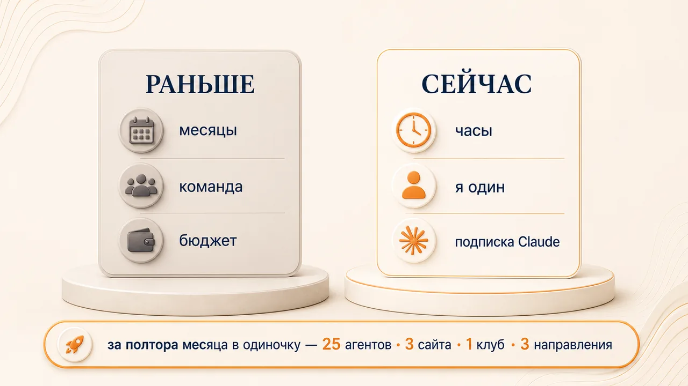

У меня рекламное агентство NEXTGEN MEDIA. С 2020 года мы помогли клиентам заработать больше 800 млн рублей, через нас прошло 400+ млн рекламного бюджета и 200+ проектов.
Я думал, что рынок наш. Открутили 100 млн бюджета, отмечали корпоратив в Москва-Сити. Никогда я так не ошибался.

2024 - стагнация. 2025 начался с жёсткого падения: вместо 100 млн стало 30. Кассовый разрыв, долги, проигранный суд, убыточная онлайн-школа в довесок.

Я два года видел системные проблемы и бил по ним. Качал отдел маркетинга внутри агентства, запускал 15 каналов лидгена на себя, пробовал другие направления бизнеса, инвестиции и кучу всего ещё. Но все попытки приводили только к потере времени, денег и сил.
Всё перевернулось за 20 минут разговора с клиентом: я понял, что такое Claude Code.
Я ушёл в это с головой: за первые полтора месяца больше 300 часов в Claude Code. Только подписка, мои мозги и время. Без команды, без вложений.

За полтора месяца я в одиночку собрал 25 ИИ-агентов, 3 сайта, клуб по подписке с полной инфраструктурой и 3 новых направления бизнеса. То, что раньше я не мог сделать и с командой из 10 человек.

Я не программист. Я просто научился правильно работать с Claude. И именно это даю на практикуме.